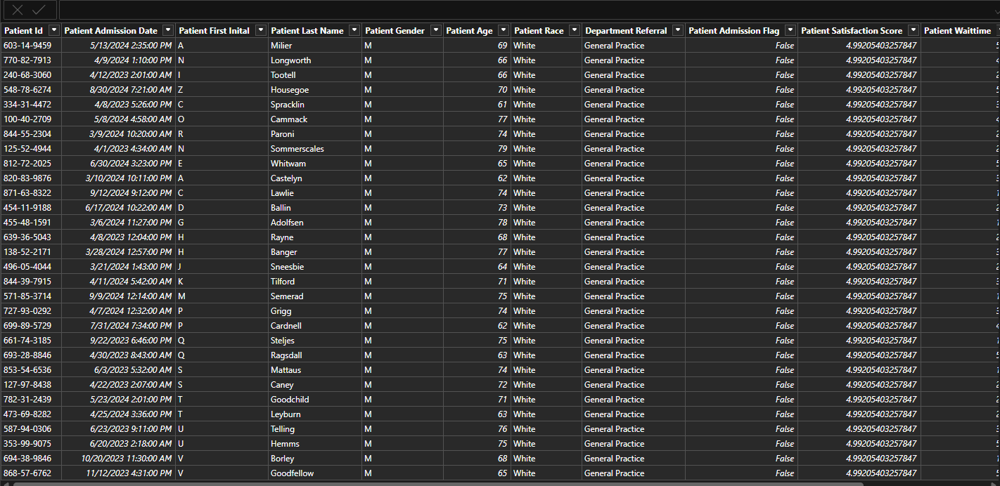
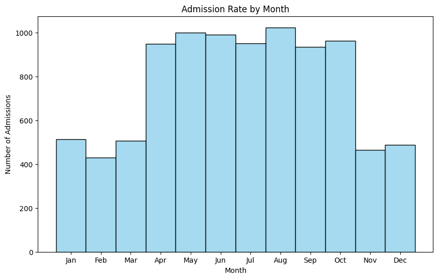
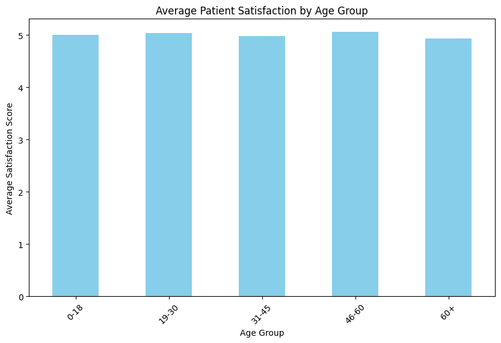
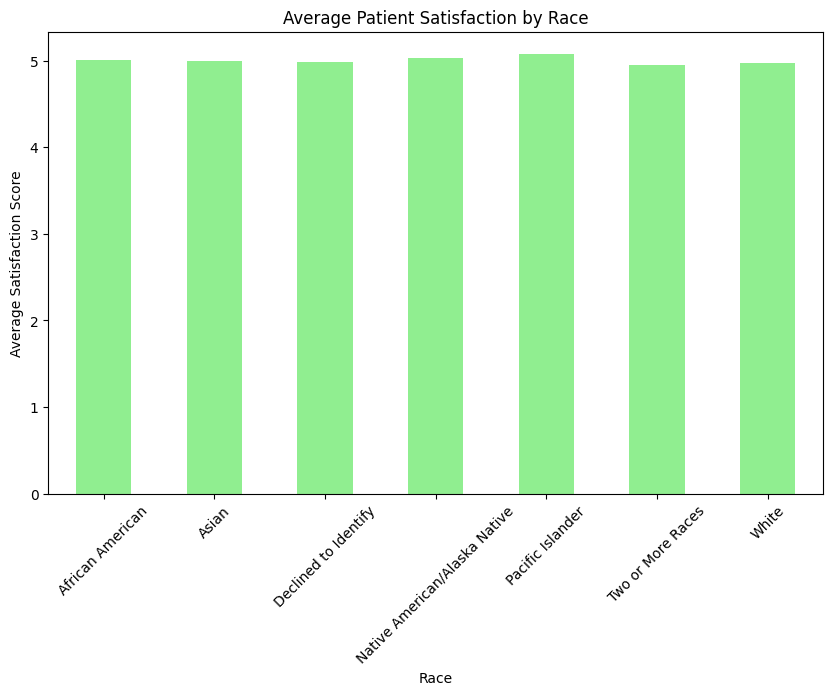

Hospital Emergency Room Data Analysis
Table of Contents
Project Overview
This project analyzes hospital emergency room (ER) visit data to provide valuable insights into patient demographics, wait times, admission trends, satisfaction levels, and potential healthcare disparities. Using tools such as Jupyter Notebook and Power BI, we aim to explore key metrics that can help improve hospital efficiency and patient care.
Project Objectives
- Analyze total ER visits based on gender, race, and referral department
- Evaluate the average wait time per visit and its correlation with patient satisfaction
- Identify trends in admission rates by month to anticipate hospital demand
- Assess patient satisfaction levels across different demographics
- Identify and mitigate potential discrimination in ER wait times or admission rates
- Provide actionable insights to optimize hospital operations and improve service delivery
Project Visuals
ER Data Table Preview
Power BI Dashboard
Project Walkthrough Video

Admission Rate by Month
Age Distribution

Age Group Satisfaction
Gender Distribution

Gender Satisfaction

Race Satisfaction
Referral Satisfaction

Key Insights:
- Seasonal Trends – If admissions increase during specific months (such as flu season in winter), hospitals can adjust staffing levels and allocate additional resources to meet the demand.
- Gender-Based Satisfaction – By analyzing the relationship between admission rates and patient satisfaction across genders, the hospital can determine if there are any gender-related disparities in care quality.
- Referral Patterns – Identifying which departments refer the most patients to the ER helps uncover potential inefficiencies or gaps in outpatient care, suggesting areas for improvement.
- Wait Time Optimization – If wait times consistently exceed acceptable thresholds, this could indicate the need for improvements in triage processes, resource allocation, or staffing during peak hours.
- Racial Disparities – A disproportionate number of visits from certain racial groups may signal underlying healthcare access issues, suggesting the need for targeted interventions to address healthcare inequality.
üõ†Ô∏è Technologies Used
- Jupyter Notebook (Python, Pandas, Matplotlib, Seaborn) – Data cleaning and visualization tools used to analyze and present the ER data.
- Power BI – Provides interactive dashboards and reports to visualize trends, patterns, and insights from the data.
- HTML, CSS, JavaScript – Used for the presentation and web interface of the project.
üåê Explore the Project By Visiting
üîó Project Repository
✨ Contributors
üë§ Jeremiah Ochepo ‚Äì Data Analyst & Power BI Developer
License
This project is licensed under the MIT License.